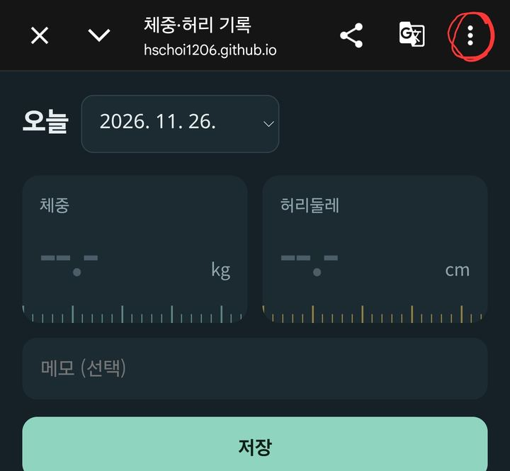
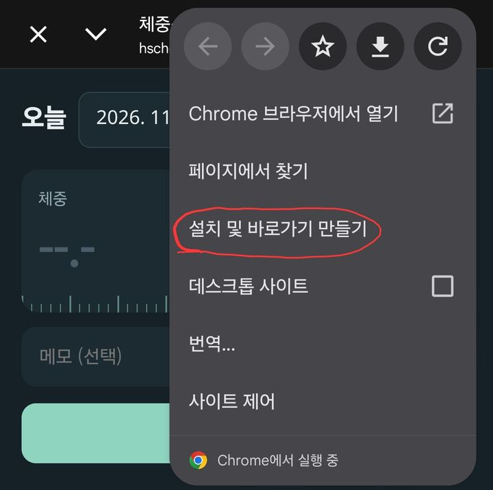
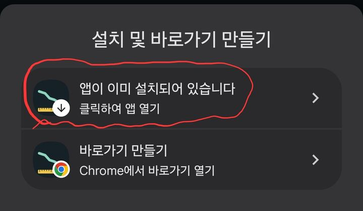
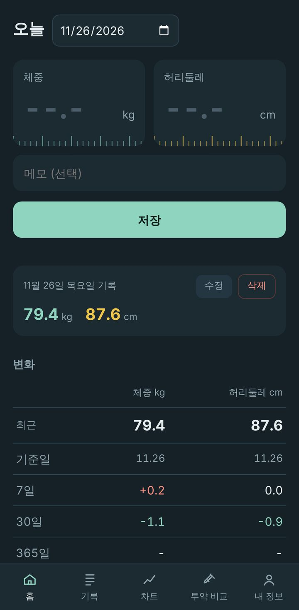
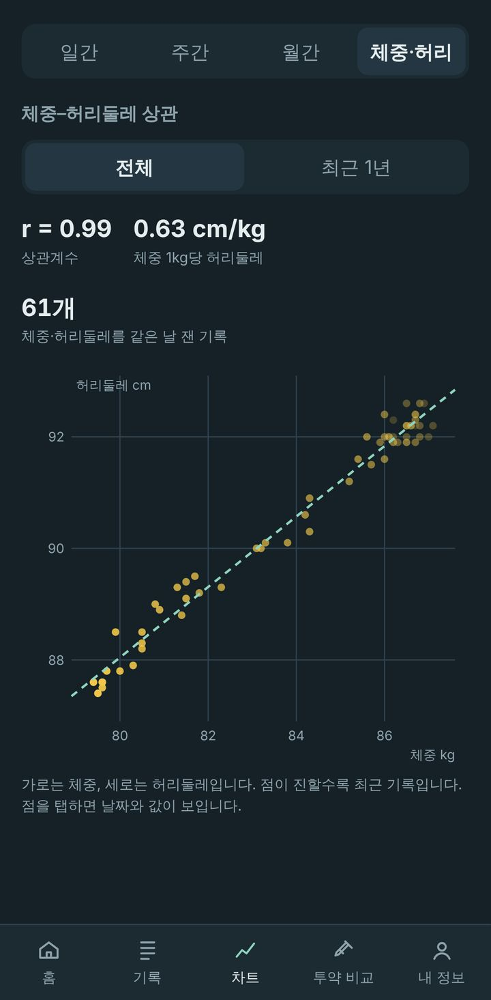
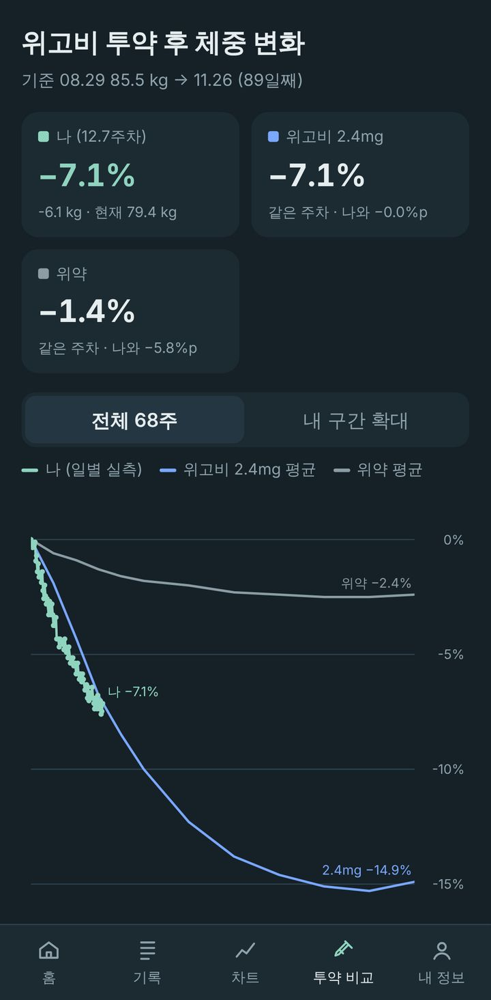

체중·허리 기록
매일 체중과 허리둘레를 적고, 변화를 그래프로 보는 앱입니다. 광고가 없고, 기록은 내 폰에만 저장됩니다.
앱 열기설치하기
안드로이드 폰의 Chrome 기준입니다. 한 번만 하면 됩니다.
카카오톡 같은 메신저에서 링크를 누르면 그 앱 안의 브라우저로 열려서 설치 메뉴가 보이지 않을 수 있습니다. 이때는 오른쪽 위 ⋮ 를 눌러 Chrome에서 열기(또는 "Chrome 브라우저에서 열기")를 먼저 누르세요.
- Chrome으로 주소를 열고 오른쪽 위 ⋮ 를 누릅니다.

- 메뉴에서 설치 및 바로가기 만들기를 누릅니다. 폰에 따라 "앱 설치"나 "홈 화면에 추가"로 보일 수 있습니다.

- 맨 위의 앱 설치 항목을 누릅니다. 홈 화면에 아이콘이 생기면 끝입니다. 이제 아이콘을 눌러 일반 앱처럼 쓰면 됩니다.

사진은 이미 설치한 폰이라 "앱이 이미 설치되어 있습니다"로 보입니다. 처음 설치할 때는 같은 자리에 설치 항목이 나옵니다.
기록하기
- 날짜는 오늘로 맞춰져 있습니다. 체중과 허리둘레 중 잰 것만 입력하고 [저장]을 누릅니다.
- 저장하면 입력칸이 비고, 아래 카드에 그날 기록이 보입니다. 고치려면 [수정], 지우려면 [삭제]를 누릅니다.
- 아침에 체중, 저녁에 허리둘레처럼 나눠 입력해도 먼저 넣은 값은 그대로 남습니다.
- 지난 날짜는 위쪽 날짜를 바꿔서 입력합니다. 전체 목록은 아래 [기록] 탭에 있습니다.

홈 화면
그래프로 보기
[차트] 탭에서 체중이나 허리둘레의 흐름을 봅니다. 두 손가락으로 벌리거나 오므리면 기간이 늘고 줄며, 두 번 탭하면 처음 보기로 돌아옵니다. 선을 누르면 그날 값이 나옵니다.



옆으로 밀어서 다음 화면을 볼 수 있습니다.
위고비 · 마운자로 비교
다이어트 주사를 맞고 있다면, 내 체중 변화를 임상시험 평균과 겹쳐 볼 수 있습니다.
- [내 정보]에서 "위고비/마운자로 투약 중인가요?"를 켭니다.
- 약 종류와 투약 시작일을 고르고 [저장]을 누릅니다.
- 아래에 생긴 [투약 비교] 탭을 엽니다. 시작일 체중에서 몇 % 줄었는지와, 같은 주차의 임상시험 투약군·위약군 평균이 함께 나옵니다.

위고비는 STEP 1 시험(2.4mg, 68주), 마운자로는 SURMOUNT-1 시험(고용량 15mg·저용량 5mg, 72주)과 비교합니다.
임상시험 평균과 견주어 보는 참고용 그래프입니다. 의학적 판단 근거가 아니며, 용량과 치료는 담당 의사와 상의하세요. 임상시험의 중간 주차 값은 논문 그래프에서 읽은 근사값입니다.
백업과 초기화
- 내보내기: [내 정보] → [내보내기]를 누르면 기록이 CSV 파일(weight_날짜.csv)로 저장됩니다. 엑셀이나 구글 시트에서도 열립니다.
- 불러오기: 폰을 바꿨다면 이 파일을 새 폰으로 옮기고 [불러오기]로 고르세요. 같은 날짜가 있으면 파일의 값으로 덮어씁니다.
- 이전 체중 앱 기록: 이전 앱에서 내보낸 .databody 파일도 [불러오기]로 옮길 수 있습니다.
- 초기화: [내 정보] 맨 아래 [모든 기록 삭제]를 누르고 '초기화'라고 입력하면 모든 기록과 내 정보가 지워집니다.
자주 묻는 질문
내 기록이 다른 사람에게 보이나요?
아니요. 기록은 이 폰에만 저장되고 어디로도 전송되지 않습니다. 앱을 만든 사람도 볼 수 없습니다.
앱을 지우면 기록은 어떻게 되나요?
함께 지워집니다. 가끔 [내보내기]로 백업 파일을 만들어 두세요.
인터넷이 없어도 되나요?
설치한 뒤에는 인터넷 없이도 열립니다. 새 버전은 인터넷이 될 때 앱을 열면 자동으로 받습니다.
돈이 드나요?
무료이고 광고도 없습니다.